MSc Computer Animation & Visual Effects
Bournemouth University
Relevant study areas
- Animation Software Engineering
- CGI Tools & CGI Techniques
- Simulation and Rendering
- Pipeline and Technical Direction
- Group Project & Industry Brief
- Master's Project
Lighting TD · Compositor · Technical Artist

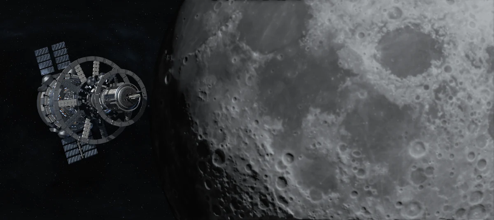
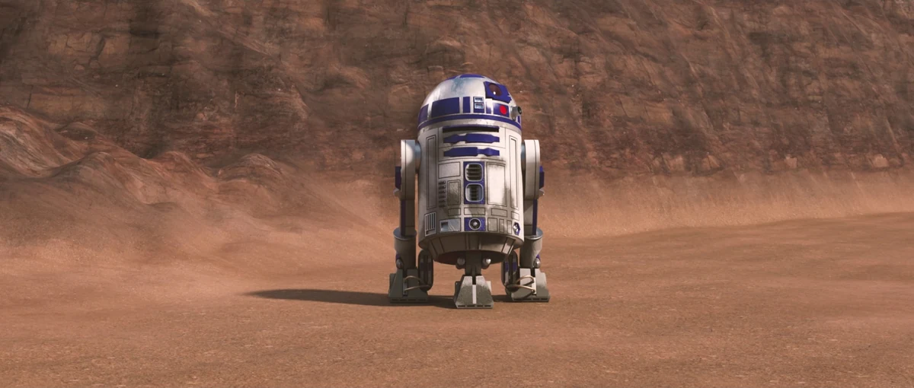
Lighting, look development and compositing in motion.
The embedded player is unavailable. Watch the principal showreel on Vimeo.
Watch on Vimeo← → Browse projects · Enter Open
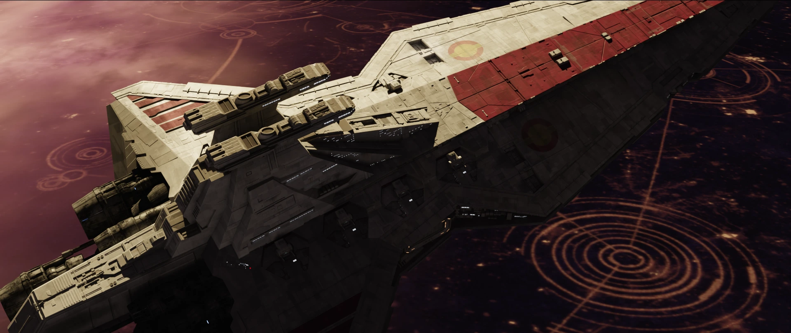
I shaped the sunset lighting and finished the ship and city in Nuke.

I lit the station and composited its lunar flyby from RenderMan passes.

I built the procedural weathering and lit and composited the desert shot.
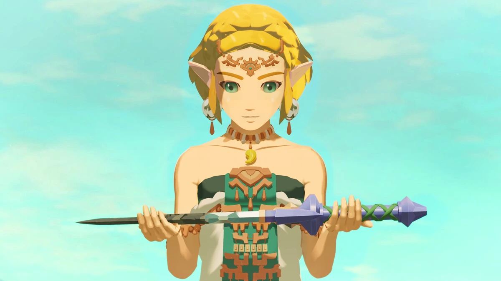
I shaped the character lighting, stylized materials and sword reflections.
I used a soft cream fill to lift the shadows on her face and hands while keeping the shape of the warm key. Blade reflections and rendered atmosphere complete the shot.
See the full breakdown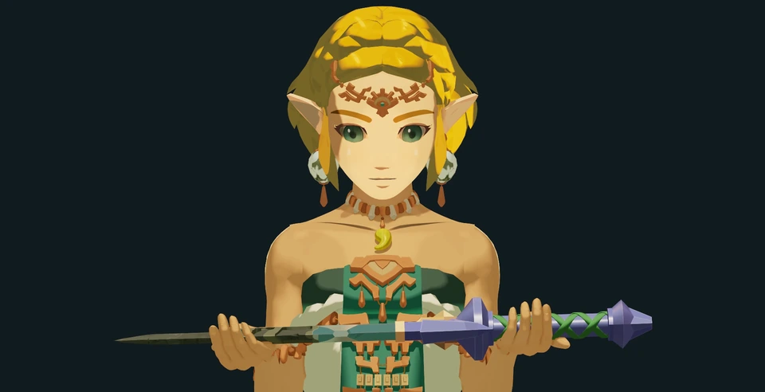
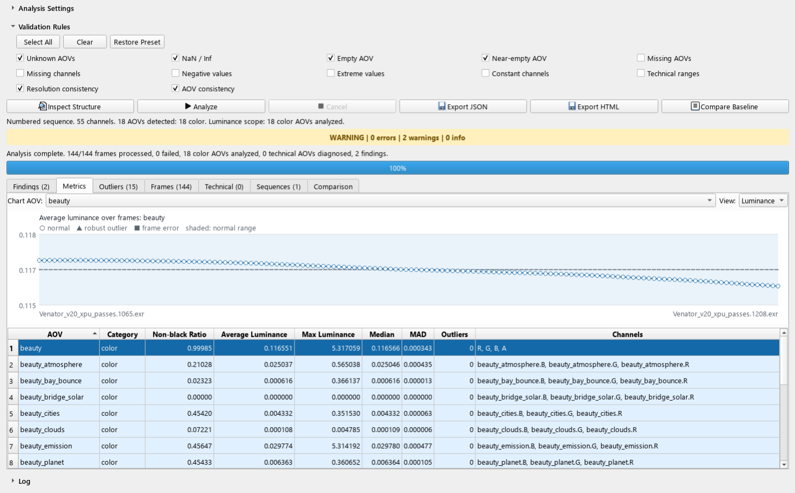
I built an EXR validator that links issues in render passes to the exact frame.
Python · OpenEXR · NumPy · PySide6 · pytest
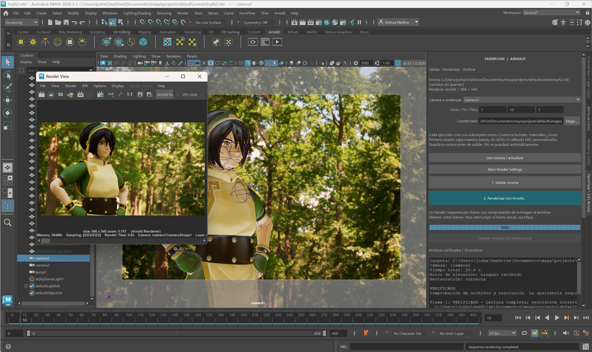
I built a Maya tool that checks scenes, runs Arnold renders and verifies the output.
Python · Maya · Arnold · OpenImageIO
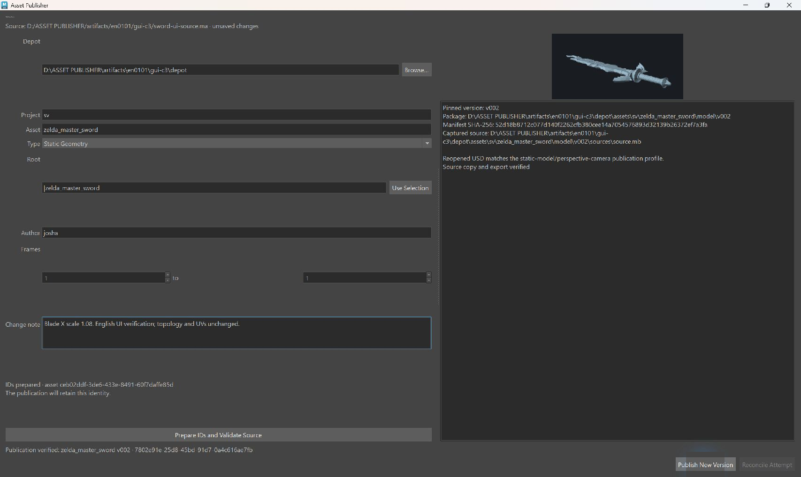
I built a versioned USD handoff from Maya to Katana and verified a rollback that preserved shot lighting and shader edits.
Python · USD · Maya 2026 · Katana 9.0v3
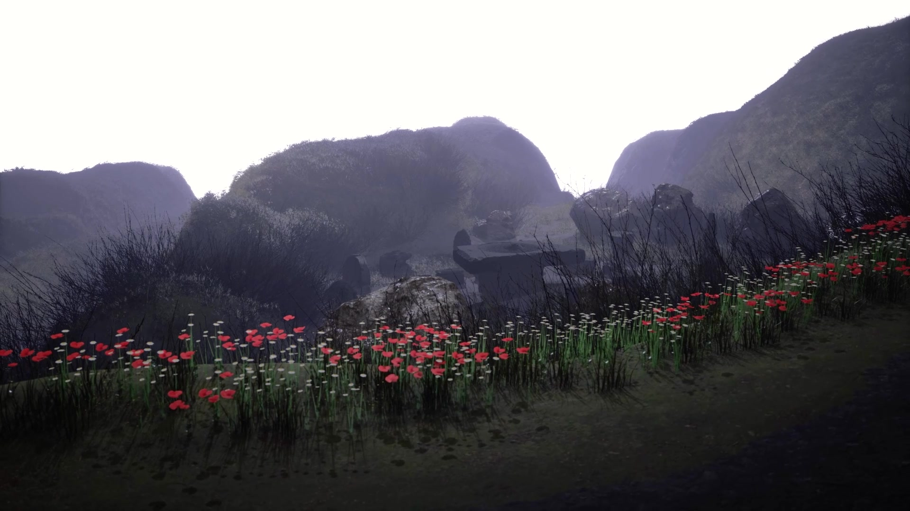
My role Lighting · cinematography · rendering
A group cinematic exploring overcast light, atmospheric depth and visual storytelling.
Unreal Engine · Lumen · Movie Render Queue
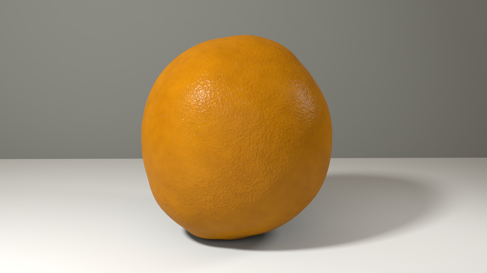
My role Procedural geometry · materials · lighting
Exploring realism through surface detail, materials and light.
Python · RenderMan · RIB · HDRI
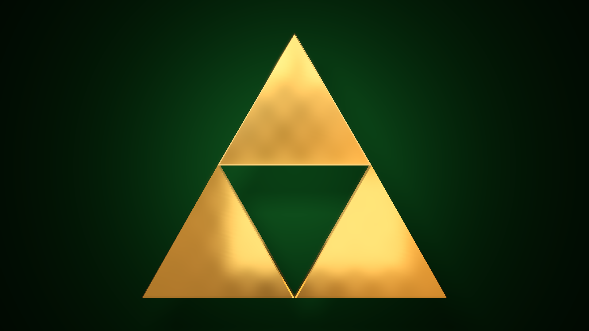
My role Renderer development · PBR shading
A CPU renderer evolved into a physically based metallic look-development tool.
Python · NumPy · Numba · Cook–Torrance · HDRI
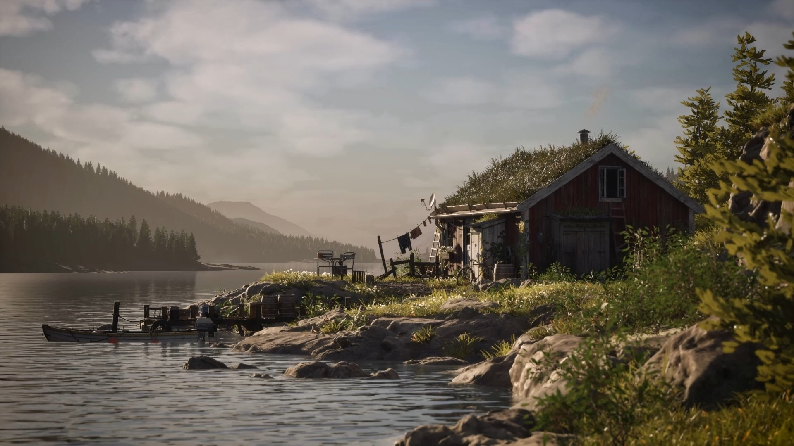
My role Lighting · look development · composition
Natural daylight, reflective water and a warm visual rhythm across a Nordic retreat.
Lighting · Look Development · Composition
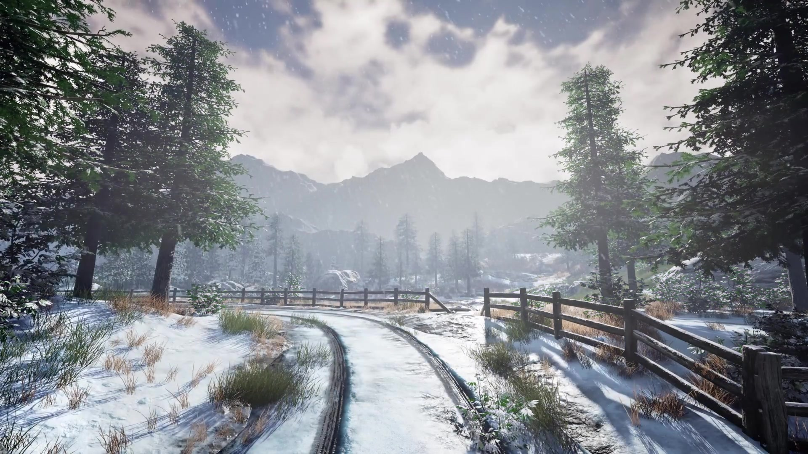
My role Lighting · camera · colour correction
Winter daylight, atmospheric depth and a cinematic grade for a mountain landscape.
Unreal Engine · DaVinci Resolve
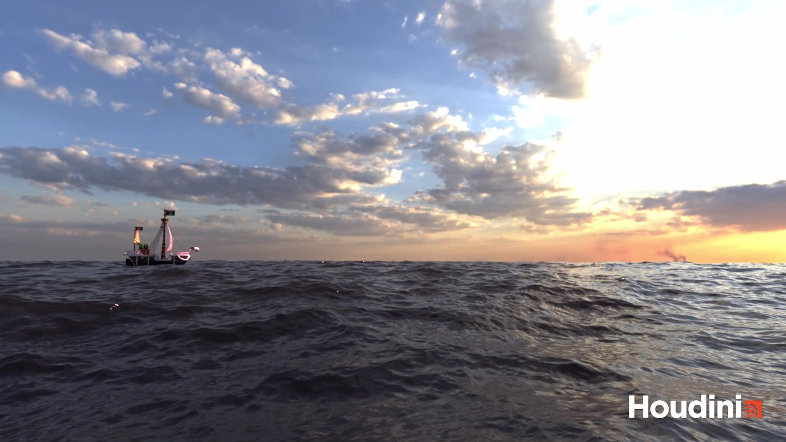
My role FX simulation · lighting · scene assembly
Ship–water interaction, from a FLIP region to an open ocean.
Houdini · FLIP · Solaris · Karma
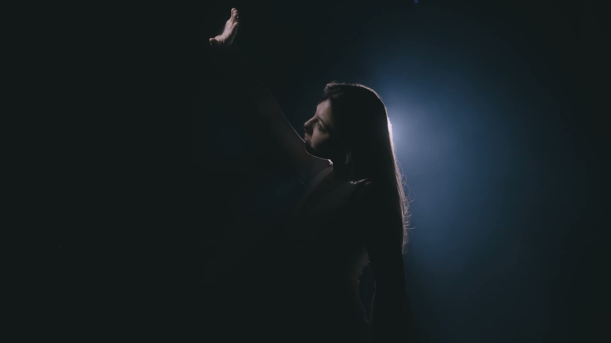
My role Director · Cinematographer · Camera Operator
Live-action work spanning natural-light portraits, low-key interiors and visual storytelling.
Camera · Composition · Light
I'm Joshua Medina — a Lighting TD, Compositor, Technical Artist and Pipeline TD. I approach image-making through light, composition and the practical systems that support a shot.
My cinematography background informs how I work with motivated light and framing. My CG projects connect look development and compositing with procedural shading, render diagnostics and Python tools.
I completed my MSc in Computer Animation & Visual Effects at Bournemouth University, following specialised CG lighting study at Lost Boys.
Bournemouth University
Lost Boys | School of VFX
Six-month specialised programme · Katana · Arnold · Nuke
Universidad Autónoma de Guadalajara (UAG)
Lighting TD / Compositor · Technical Artist / Pipeline TD
Experience, selected projects, skills and education. The PDF opens in a new tab.
View CV PDF Download PDFFor lighting, compositing and pipeline opportunities.
Joshalexmedina@hotmail.com